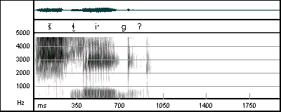
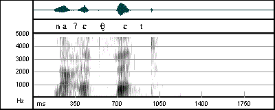

.gif)
<na'ihthet> 'I am standing'
Tanacross contains five consonants which are represented in the practical orthography with an underscore: <ł>, <th>, <s>, <sh>, <x>. These consonants have been described as semi-voiced or partially voiced fricatives. They can be informally described as beginning voiceless and transitioning to a voiced sound.
The voicing transition can be seen quite clearly in the following spectrogram. Voice bars are not present at the beginning of the lateral fricative <ł>, but they are present at the end.

<shłig'> 'my dog'
For other segments the voicing transition is not quite so evident. For example, compare the voiceless dental fricative <th> in the following spectrogram,
<na'ihthet> 'I am standing'
with the semi-voiced fricative in the spectrogram below.

<na'ethet> 's/he is standing'
No clear evidence of voicing is present in either spectrogram. The distinguishing feature is the presence of a much greater degree of high-amplitude noise in the voiceless segment. It is this observation which leads to the characterization of the voiceless segments as fortis, and the semi-voiced and voiced fricatives as lenis.
For more information see Holton (2001) "Fortis and lenis fricatives in Tanacross Athapaskan." International Journal of American Linguistics.